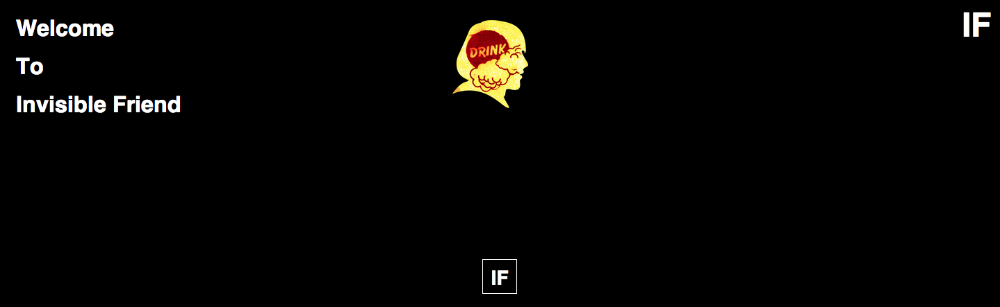
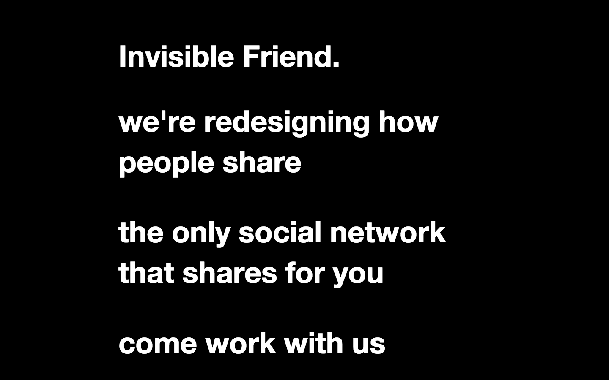
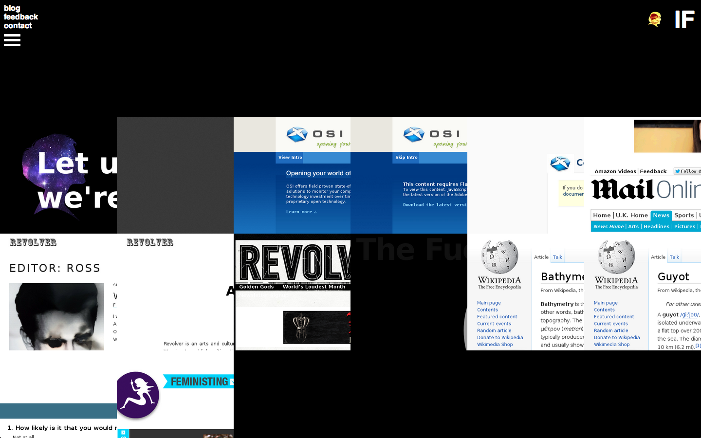
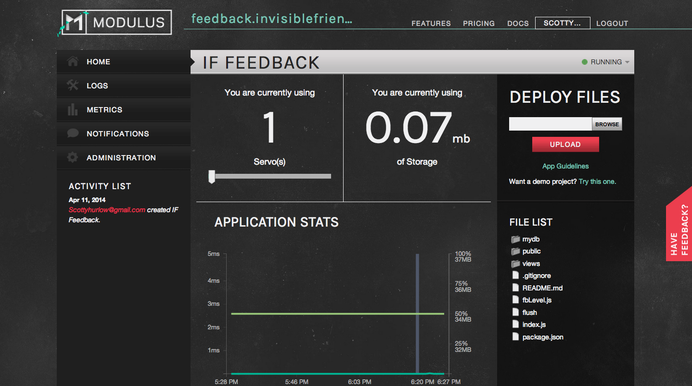
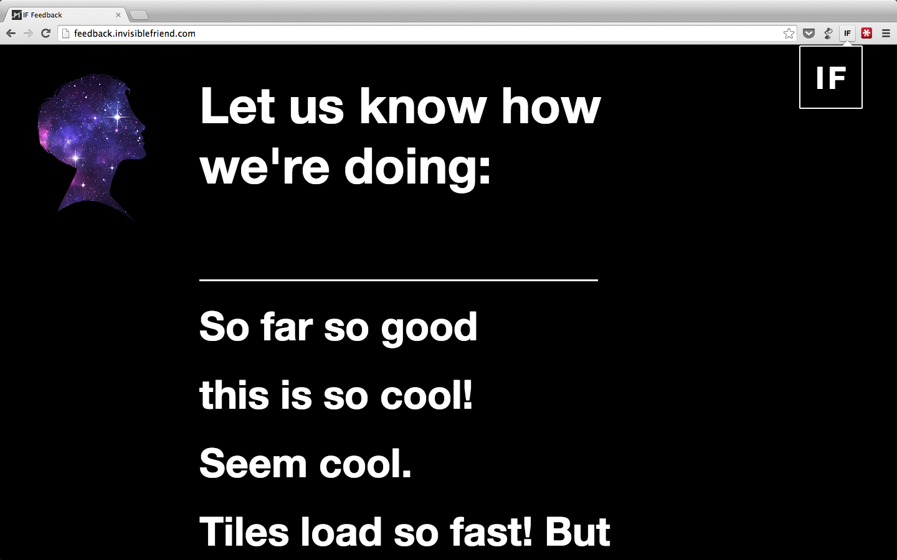

Invisible Friend Intership
Scott Hurlow
My experiance learning Javascript, Node, and LevelDB
Goals
Going into my internship
-
Learn essentials of web design & production

-
Experience working with a team


-
Help develop a cool product and learn about start-up culture in the Twin Cities!
Invisible Friend ( IF )



Node
These are the open source modules that my app depends on. Express.js is the web application framework I use and fbLevel is my own implementation of levelDB using levelUp
Setting the 'view engine' to hjs tells the app to render html using hogan.js, a lightweight mustache templating engine for Node.

Express.js
This is an example of one of my route requests using my express app. Get and Post requests for the main page:

Very basic authenication variable with express. I can simply pass this into whichever route I desire.
more Express:
Here is the admin authenitcated route that downloads the entire database as csv file.
LevelDB
Here is a snippit of my level database implementation:
For my purpose, I did not need to implement more than a few essential methods, put, getKey, getValue, getAll, and deleteAll, all with a similar structure as the one above.
JQuery + Ajax
Since I am already using JQuery for the user input, I decided to continue and use the JQuery ajax method for posting the input to the app.
I eventually hope to replace this JQuery with Browserify and Super-Agent to achieve a more wholistic 'node-like' infrastructure.
Modulus
Modulus provided an easy way to deploy my web app.
With further iterations of this project I expect to set up my own server to run the feedback page.


First beta version of Feedback page
Live App
Skills I Came Away With:
- Comfortability with Javascript
- Basis for writing Node and Express Web apps
- Introduction to LevelDB and general db implementation
- Mastering Git
Areas to Continue:
- More complete/complex understanding of databases
- Streams in Node
- Continued, but now payed, internship with IF through this Summer!
Thank You
Scott Hurlow
Follow my feedback prject as I keep adding cool features:
IF-Feedback GitHub
And check out Invisible Friend
Beta Page
.